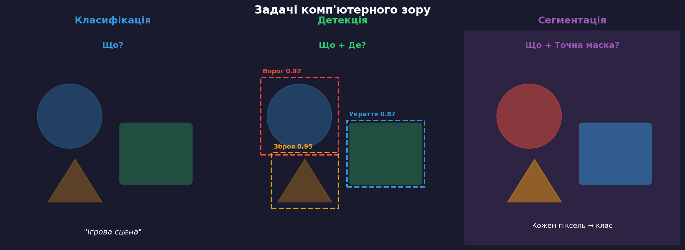
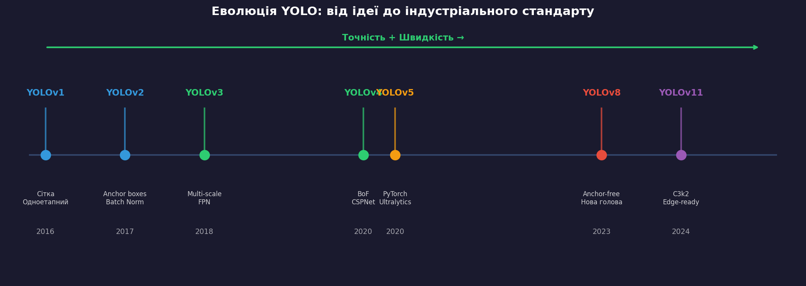
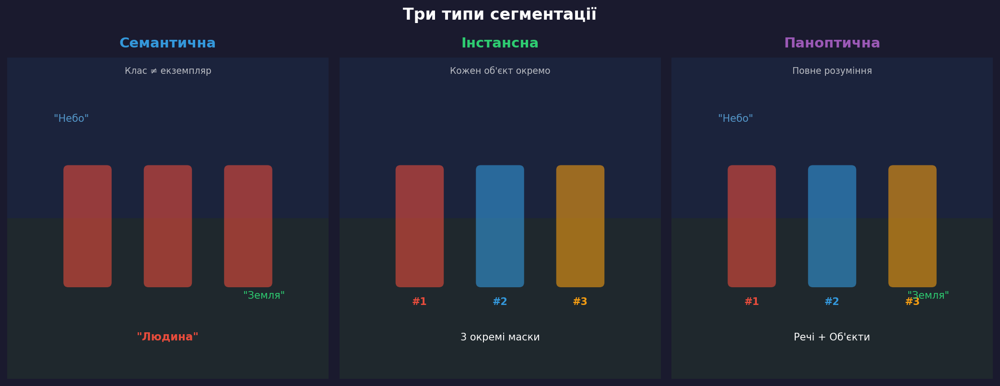
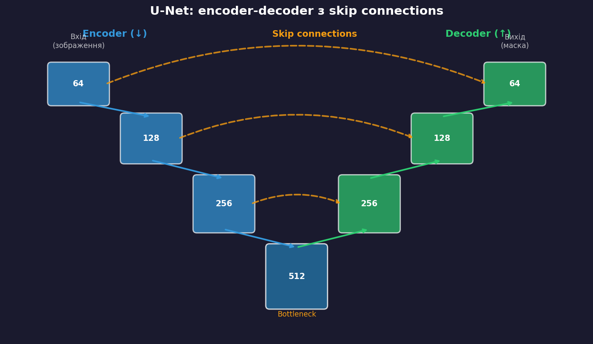
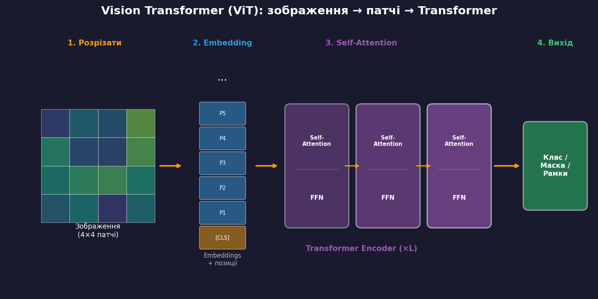
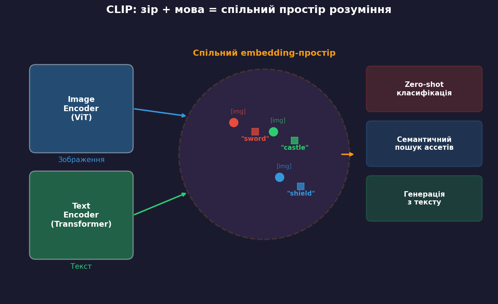
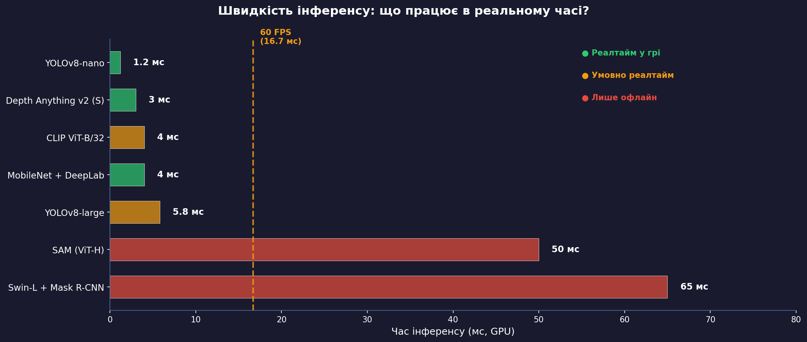
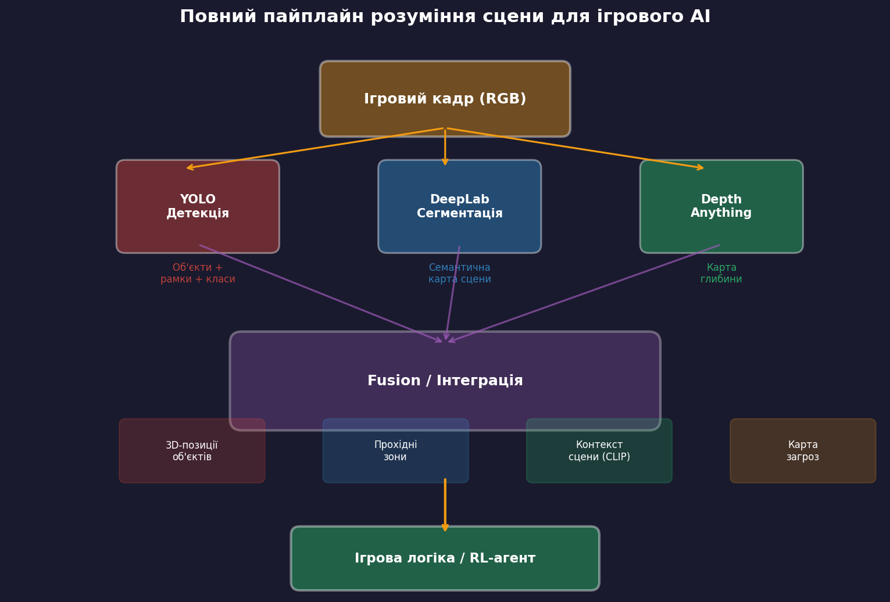

Лекція 8 (частина 2)
Штучний інтелект в ігрових застосунках
Національний університет «Львівська Політехніка»
Три напрямки CV в іграх: Всередині гри У розробці Навколо гри

Класифікація → Детекція → Сегментація: зростає рівень деталізації розуміння
Для кожного об'єкта модель передбачає:
(x, y, w, h)
c ∈ {1, ..., C}
p(c) ∈ [0, 1]
Складність: десятки/сотні об'єктів різного розміру, з перекриттями, на складному фоні — за один прохід мережі
~5 FPS — точно, але повільно
400+ FPS — швидко і точно

mAP@50:95 на COCO: v1 (63%) → v8 (53.9% mAP@50:95) при 400+ FPS
IoU = |Bpred ∩ Bgt| / |Bpred ∪ Bgt|
IoU ≥ 0.5 → об'єкт «знайдено»
Поступове розпізнавання, обмежене поле зору, контекстна обізнаність
MineRL, MineDojo (NVIDIA)
Детекція оверлеїв, аналіз руху прицілу, відеоаналіз стрімів
Riot Games, Easy Anti-Cheat
Графічні артефакти, z-fighting, UI-перевірка, порівняння білдів
EA AutoPlay, Ubisoft La Forge
Позиції гравців, теплові карти, highlight detection
GRID / Bayes Esports

Семантична — класи; Інстансна — окремі об'єкти; Паноптична — все разом

Encoder зменшує → витягує ознаки. Decoder відновлює → локалізує межі. Skip connections зберігають деталі.
| Архітектура | Рік | Ключова ідея | Тип |
|---|---|---|---|
| U-Net | 2015 | Encoder-decoder + skip connections | Семантична |
| DeepLab v3+ | 2018 | Atrous convolutions + ASPP | Семантична |
| Mask R-CNN | 2017 | Faster R-CNN + маска для кожної рамки | Інстансна |
| SAM | 2023 | Foundation model, 1.1B масок, zero-shot | Будь-яка |
Супутникове фото → сегментація → біоми / тайли для ігрової карти
Кадр → маски «підлога», «стіна», «двері» → навігаційні рішення
ViZDoom
Відділення гравця від фону в реальному часі (MediaPipe, 30+ FPS)
Баланс візуальних елементів, контраст персонажа на фоні

Зображення → патчі 16×16 → embedding + позиції → Transformer encoder → класифікація/детекція/сегментація
Для ігор: глобальний контекст, гнучкість роздільності, природне поєднання з мовними моделями

400M пар «зображення + текст» → спільний embedding-простір → zero-shot класифікація
Meta, 2023: foundation model для сегментації
11M зображень, 1.1B масок, zero-shot на будь-яких зображеннях
Depth Anything v2 (ByteDance, 2024): 62M зображень, метрична глибина, реалтайм
2D текстура → карта глибини → автоматичний normal map
Фото → глибина → паралакс для «живих» фонів
Pokemon ховається за деревами завдяки depth map
| Проєкт | Технологія | Результат |
|---|---|---|
| MineDojo (NVIDIA) | MineCLIP (CLIP + відео) | Агент виконує текстові інструкції в Minecraft |
| Ubisoft La Forge | Детекція + сегментація | Автоматичне QA для Assassin's Creed |
| MediaPipe (Google) | Pose + Hand tracking | Just Dance, Beat Saber, Vision Pro |
| GRID Esports | YOLO на мінімапі | Автоматична аналітика CS/Dota 2 |
| ControlNet + SD | Neural Style Transfer | Перестилізація ігрових скріншотів |

Легкі моделі (YOLO-nano, Depth Anything-S) → реалтайм. Важкі (SAM, Swin-L) → інструменти розробки.
torch.export → ONNXPyTorch → torch.export → ONNX → TensorRT → Ігровий рушій (C++) → GPU інференс (< 5 мс)
YOLO + DeepLab + Depth Anything → fusion → 3D-позиції, прохідні зони, контекст → ігрова логіка